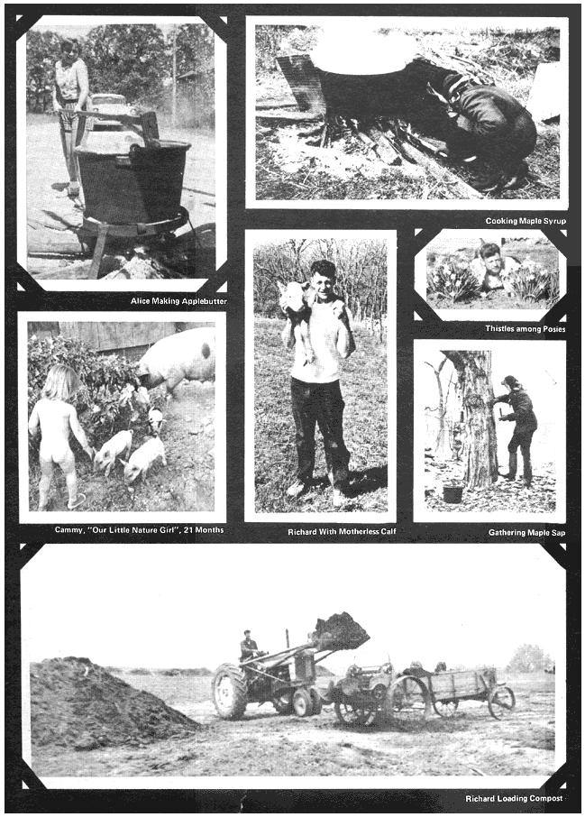

We laughed when we read Report From Them That's Doin' in MOTHER NO. 5. This "Old Farmer Friend" fellow with all the advice, the grey OLD folks living in the big house on the hill . . . Hey! That's us! And we figured you might like a first-hand report of what we're all about.
I'm 28, Richard-my husband-is 31 and, for the next umteen years, we'll be doing just what we're doing now: Keeping healthy and vigorous by growing all our own food while trying to get 138 acres to produce enough to pay for itself. This is slow, hard work (one "drawback" is our belief in organic farming: We wouldn't dream of polluting our precious land with artificial fertilizers or insecticides) . . . but it does offer many rewards, too.
Richard has lived on this land for 10 years and, just four years ago, I snatched away his single blessedness and moved in. I'd finally convinced him that-since he was a former city boy and I'd always lived on farms-he really needed me. To be honest, though, I believe Richard has learned more about farming in 10 years than I have in 28.
Our farm had been neglected and was badly eroded when Richard settled here and we're still rebuilding the soil with homemade compost (the wonderful byproduct of our 70 head of cattle.) We also built terraces across the slopes of our rolling fields with tractor, plow and homemade transit. A terrace-in case you're wondering-is kind of a long, very low dam or "stairstep" across the face of a hill. It holds water for days after a rain so the moisture can gradually soak into the soil rather than run off to wash more gullies in (and topsoil out!) of our fields.
Our main sources of income come from the sale of beef, pork and whole wheat flour (we raise the wheat and grind it in a small commercial mill in a shed affectionately known as "the grindin' room").
Surplus vegetables, eggs, honey, milk, homemade bread and dried herbs bring us a sporadic sideline income. This might become more important in the future, however, because a doctor has just started referring severe allergy patients who need pure foods to us.
Our income may be limited but our style of eating is not: We butcher our own meat-inexpertly cut, true-but SO good.
Next spring we'll be raising our 4th generation of baby chicks hatched both under hens and in an incubator. Each generation gets hardier and we waste NO time pampering them. I'd like to add ducks, turkeys and guinea hens to our poultry operation but all my time now is required for our Cammy, 22 months, and Ash, 10 months.
Incidentally, baby food bills have never exceeded $2.00 per child because I nursed them, then put both babies on cow's milk and made all their strained vegetables and cereals. Added bonus: No harmful food additives, MSG, excess salt nor sugar. As a result, our babies are HEALTHY.
Our big garden is on some of the farm's best soil. It grows fine vegetables that are pretty well bug and pest-free, except for occasional rabbits . . . and they usually end up in the stew pot!
The only other major raid we've had on the vegetable patch took place when I was a fresh bride of two weeks and looked out the window to see a big, ole groundhog a-chompin' up the choicest cabbages. I grabbed up Richard's rifle, took a cold bead on my first real live target and . . . Zaam! Next evening, when the critter's mate came a-softfootin' it through the fence for the remaining cabbages, Richard led him good and . . . the garden has lived happily ever since.
We have other ways of eating well on little. Richard keeps bees and supplies all the honey we need and I make all our butter, ice cream and cottage cheese from Ole Bessie's milk. Recently we discovered that we LOVE yogurt so I now make lots of that, too.
Wild foods we harvest from the land include mushrooms, persimmons, elderberries, blackberries, walnuts, wild lettuce, dandelion greens, lambs quarter, rabbits, squirrels, frogs and-soon, we hope-fish from our pond. It's wonderful fun tramping around outdoors, scrounging things, absorbing all the peace and quiet. Once my brother and I sloshed up and down an icy creek in hip boots collecting 40 gallons of maple sap which we cooked into syrup. Did we feel industrious and old-timey!
This fall I look forward to some more old time fun: Making a kettle of soap outdoors like my mother always does. Maybe I'll make some applebutter, too.
The only drawbacks to our life seem to be purely economic: No indoor plumbing until the water recently piped to the sink; uninsulated frame house heated by a wood stove that periodically belches soot and smoke into the living room; antiquated, balky machinery; a coughing, sputtering, old wringer washing machine; drippy roofs; tumbledown fences that are ALWAYS leaking pigs or cows; and, worst of all, the drag of farm payments.
It sure beats the 9-to-5 rat race, though!
|
|
 |
|